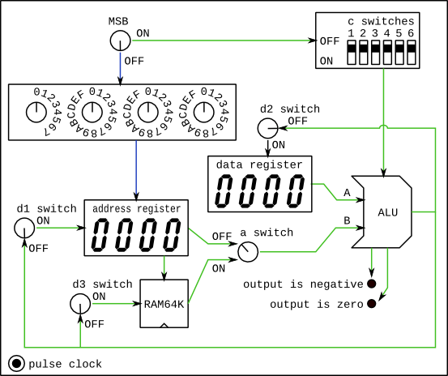
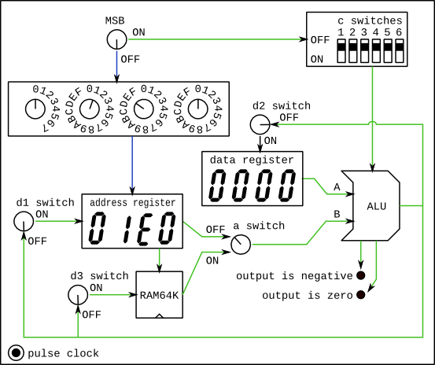
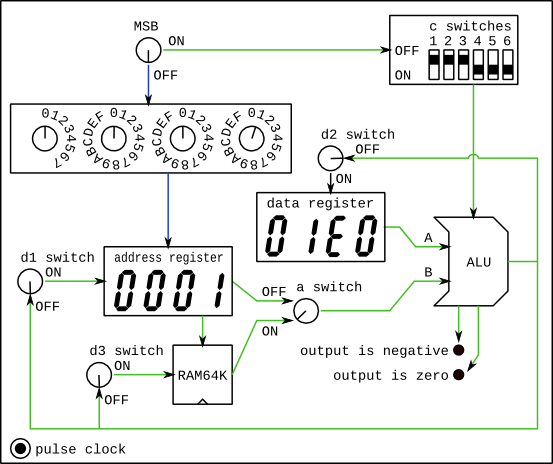
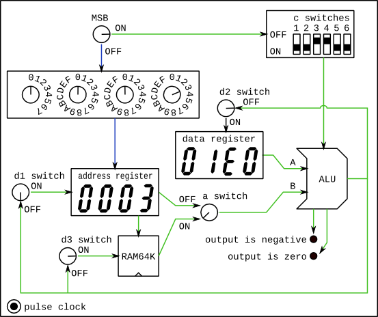
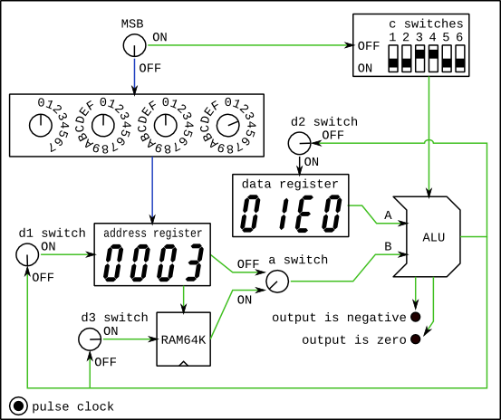
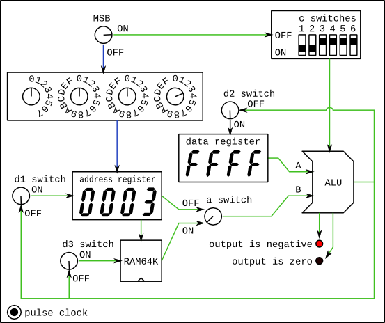
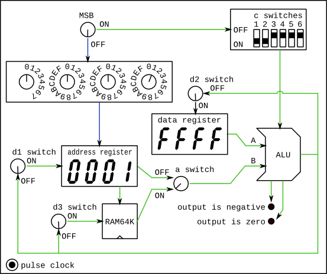

If you're having trouble understanding the programmable circuit described in the week 5 notes imagine a box with the following visible features:

This selects between loading a value into the address register, or performing a computation on the ALU. The blue and green lines are drawn on the case of the box to show which parts of the circuit are active when the MSB is turned to OFF and ON respectively.
These dials set the value to be written to the address register. This only happens when the MSB switch is set to OFF.
This switches between the two sources for the B input of the ALU. When it is OFF, the B input of the ALU comes directly from the address register. When it is ON, the B input of the ALU comes from register in the RAM chip that corresponds to the value in the address register. For example, if a is OFF and the address register is currently set to 0x0001, then the B input of the ALU comes from memory location 0x0001 in RAM.
These displays show the current contents of the data register and address register in hexadecimal.
These 6 switches control the function of the ALU as we worked through in class. The output depends on the switch settings according to the following table:
| c1 | c2 | c3 | c4 | c5 | c6 | output of the ALU |
|---|---|---|---|---|---|---|
| T | F | T | F | F | F | 0 |
| T | T | T | T | T | T | 1 |
| T | T | T | F | T | F | -1 |
| F | F | T | T | F | F | A |
| T | T | F | F | F | F | B |
| F | F | T | T | F | T | ~A |
| T | T | F | F | F | T | ~B |
| F | F | T | T | T | T | -A |
| T | T | F | F | T | T | -B |
| F | T | T | T | T | T | A+1 |
| T | T | F | T | T | T | B+1 |
| F | F | T | T | T | F | A-1 |
| T | T | F | F | T | F | B-1 |
| F | F | F | F | T | F | A+B |
| F | T | F | F | T | T | A-B |
| F | F | F | T | T | T | B-A |
| F | F | F | F | F | F | A&B |
| F | T | F | T | F | T | A|B |
Note: in this table, T means the switch is ON, F means the switch is OFF.
These three switches control whether the output of the ALU gets written into the address register, the data register, or RAM respectively. Overwrites happen on the next clock pulse, and only if the switches are ON.
These will light up if the output of the ALU is zero or negative respectively. We will be using the output of these wires next week. For now, we can check them to verify the functionality of the ALU.
This button activates a clock pulse when pressed. This will cause any registers or RAM to get overwritten if their corresponding "d" switch has been set to ON.
For the exercise this week I want you to re-create the functionality of the circuits you designed last week.
The first step is to identify all of the values that you want your circuits to modify. For each such value, you need to assign a unique address in RAM. The order of these is not important, but it usually makes sense to keep related values together. For my Pong examples I assigned the following addresses:
| address | value |
|---|---|
| 0x0000 | ball-x-position |
| 0x0001 | ball-y-position |
| 0x0002 | ball-x-velocity |
| 0x0003 | ball-y-velocity |
| ... | ... |
Each worked example will require a number of steps. Each step requires setting the necessary switches on the programmable circuit and then pressing the clock pulse button.
For these examples, I'm assuming a video screen 480 pixels high with 0 representing the bottom and 479 the top.
The result I want to know: is ball-y-position >= 480?
As before, I'm going to re-write this slightly to: is ball-y-position - 480 >= 0?
This alternative version is equivalent, but since the test is now against 0 I can use the output from the ALU to tell me if the result is negative. If it isn't, then the result must be >=0.
One way to get ball-y-position - 480 as the output of the ALU is to load 480 into the data register, the address of ball-y-position into the address register, and get the ALU to perform the function B-A.
Because I can't load a value into the data register directly, I first need to load it into the address register and then write it to the data register.
To load it into the address register, I need to set the MSB to OFF, and set the number dials to encode the value 480 in hexadecimal. (I could work this out or use the calculator accessory in programmer mode to convert 480 to hexadecimal.) The value I'll need is therefore 0x01E0. After pushing the clock pulse button, the box would look like this:

Next I can will copy the value from the address register to the data register by getting the ALU to output the value of the address register and setting the write switch on the data register. So I need the MSB switched ON. I need the "a" switch set to OFF so that the value of the address register goes directly into the B input of the ALU. I need to set the "c" switches to get the ALU to output "B" which from the table above is: TTFFFF or ON ON OFF OFF OFF OFF. Finally, I need switch "d2" ON and the others OFF. After pressing the clock pulse, the box would now look like this:
Now I need to get the ball-y-position value, which from the table above is located at address 0x0001. To load this value into the address register, I need to set the MSB to OFF, and program the number 0x0001 on the number dials. After the clock pulse:
Finally I need to program the ALU to output "B-A" using the value from RAM location 0x0001 as the B input. So I need the MSB set to ON to perform a computation. I need to "a" switch set to ON so that the "B" input to the ALU comes from RAM location 0x0001. The c switches for "B-A" are FFFTTT. Finally, I don't need to write this result anywhere so all the "d" switches need to be OFF. What happens after the clock pulse depends on the current value of ball-y-position in RAM. If the value is less than 480, then the result of B-A will be a negative number, and the negative LED will light up. If the value is more than 480, then the result will be greater than 0 and neither light will be ON. If the value was exactly 480, then the result would be 0 and so the zero light will be ON. If this was the case, the box would look like this after the clock pulse:
I have my answer: if the negative light is OFF after the last operation, then the ball has gone off the top of the screen.
The result I want to know: is ball-y-position < 0?
This one is easier since all I need to do is get the ALU to output the value of the ball-y-position, and see if it is negative.
First, as in the third step above, I need to load the location of ball-y-position in RAM into the address register. From my table, I know this is 0x0001.
I set the MSB to OFF, and the number dials to 0x0001. After the clock pulse:

Then I'll set the ALU to output the B input: MSB to ON; "a" to ON; the "c" switches to TTFFFF; and, all the "d" switches to OFF. Again, what happens next depends on the value of the ball-y-position. If the position is negative, then the negative LED light will be ON, otherwise it will be off.
If either of the above conditions turned out true, I'd need to bounce the ball to keep it on the screen. I can do this by negating the ball-y-velocity. So if the ball was going up, and it needs to bounce, then negating it will make it go down instead. Alternatively, if the ball was going down, and it needs to bounce, then negating it will make it go up instead.
The ball-y-velocity is stored at address 0x0003 according to my table. So the first step is to set that into the address register. As before, set the MSB to OFF, and the number dials to 0x0003. After the pulse, the box should look like this:
To negate a value in memory, I'll set the circuit to channel the value from memory into the "B" input of the ALU, program the ALU to output "-B", and then write the value back into memory.
Set: MSB to ON, "a" to ON, the "c" switches to TTFFTT; and, set the switch "d3" to ON.
After the clock pulse, the box should look as follows (although again, the status of the zero and negative LEDs will depend on the new contents of the ball-y-velocity):

Each frame of the game, I want to add the ball-y-velocity to the ball-y-position. To do this will first require loading the ball-y-velocity into the data register, adding it to the ball-y-position, and then writing it back into memory.
As in the first example, I can't load a value directly into the data register, I first have to copy it.
I'll start by loading the address of the ball-y-velocity (0x0003) into the address register.
Set MSB to OFF and the number dials to 0x0003. After the clock pulse, the box should look like this:

Next I'll copy the value of ball-y-velocity from RAM into the data register. So I'll set the "a" switch to present the result from RAM to the ALU "B" input. Set the ALU to output the "B" input. And set the "d" switches to write to the data register only.
Set: MSB to ON; "a" switch to ON; "c" switches to TTFFFF; switch "d2" only to ON. After the clock pulse the data register should contain the present value of the ball-y-velocity. For this example, I'll assume that the ball is currently going down, so the ball-y-velocity should equal -1 (or 0xFFFF in hexadecimal):

Next I'll load the address of the ball-y-position into the address register by setting MSB to OFF and the number dials to 0x0001. After the pulse the box should look like this:

Finally, I'll instruct the ALU to add the value from memory and the data register, and store the result back into memory.
Set MSB to ON; set "a" switch to ON; set "c" switches to FFFFTF; set only the "d3" switch to ON. After the clock pulse the status of the "negative" and "zero" flags will depend on the new ball-y-position value. The following illustration shows what the box would look like if the operation were carried out and the ball-y-position was 479:
To submit these examples I would create a text document and write out the following:
Data stored in RAM: 0x0000 ball-x-position 0x0001 ball-y-position 0x0002 ball-x-velocity 0x0003 ball-y-velocity has the ball hit the top of the screen? (ball-y-position >= 480) set MSB=F number=0x01E0 set MSB=T a=F c=TTFFFF d=FTF set MSB=F number=0x0001 set MSB=T a=T c=FFFTTT d=FFF result is true if negative=F has the ball hit the bottom of the screen? (ball-y-position < 0) set MSB=F number=0x0001 set MSB=T a=T c=TTFFFF d=FFF result is true if negative=T bounce the ball vertically: ball-y-velocity = -(ball-y-velocity) set MSB=F number=0x0003 set MSB=T a=T c=TTFFTT d=FFT update the ball's height: ball-y-position = ball-y-position + ball-y-velocity set MSB=F number=0x0003 set MSB=T a=T c=TTFFFF d=FTF set MSB=F number=0x0001 set MSB=T a=T c=FFFFTF d=FFT